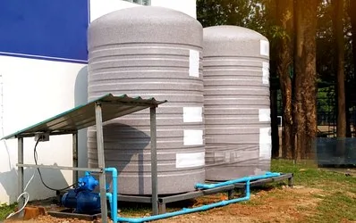
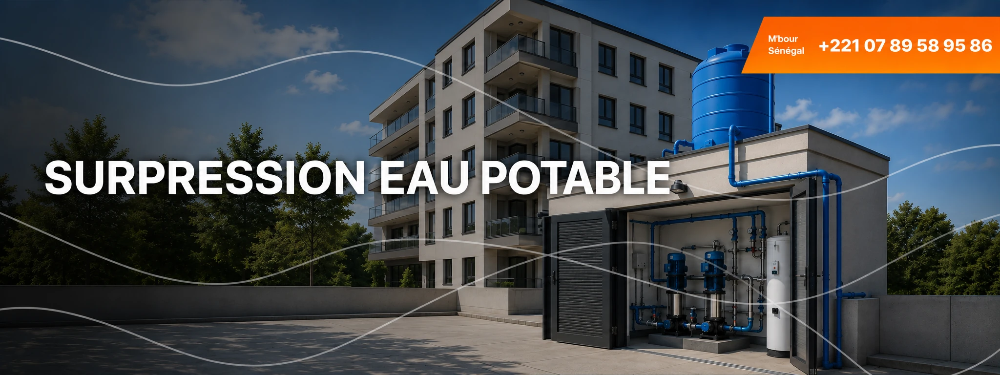
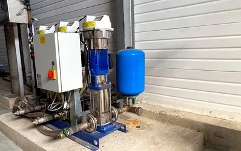
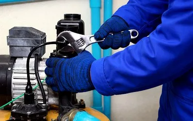

Stockage d’eau potable
Cuves et équipements de réserve pour sécuriser l’approvisionnement.

Dans les pôles urbains du Sénégal, la densification se traduit par une verticalité croissante. Si les immeubles de grande hauteur répondent au besoin d'espace, ils mettent à rude épreuve les réseaux de distribution. En s'élevant, les infrastructures dépassent souvent la ligne piézométrique du réseau urbain, rendant l'approvisionnement aléatoire.
Pour répondre aux problématiques de pression, de stockage et de continuité de service, HYDREAUPRO propose des solutions fiables, innovantes et durables afin d’assurer la disponibilité de l’eau potable, en quantité et en qualité, tout au long de la journée.
Quelques exemples de solutions de stockage, distribution d’eau potable et de maintenance.

Cuves et équipements de réserve pour sécuriser l’approvisionnement.

Organisation des conduites et points de distribution selon les usages.

Solutions pour maintenir la pression et limiter les interruptions de service.
HYDREAUPRO intervient sur les installations permettant de sécuriser le stockage, la pression et la distribution de l’eau potable dans les bâtiments et infrastructures.
Solutions adaptées aux bâtiments à plusieurs niveaux et aux besoins des étages supérieurs.
Systèmes conçus pour garantir une disponibilité régulière de l’eau potable.
Installations dimensionnées pour les usages collectifs et professionnels.
Solutions fiables pour les sites nécessitant une alimentation continue en eau.
Contactez-nous et nos équipes vous répondront dans les plus brefs délais.